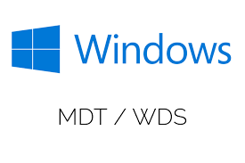
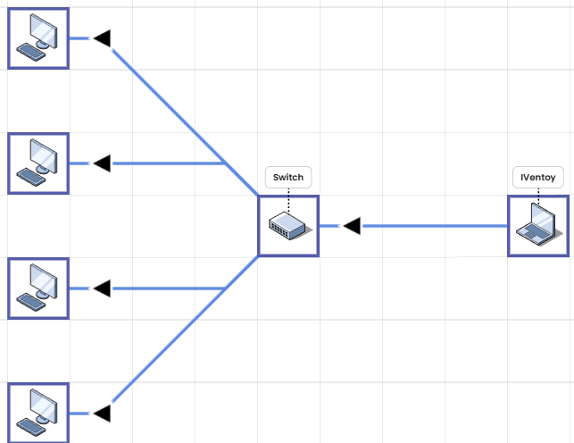
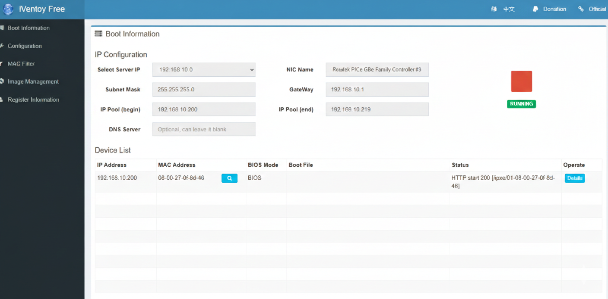
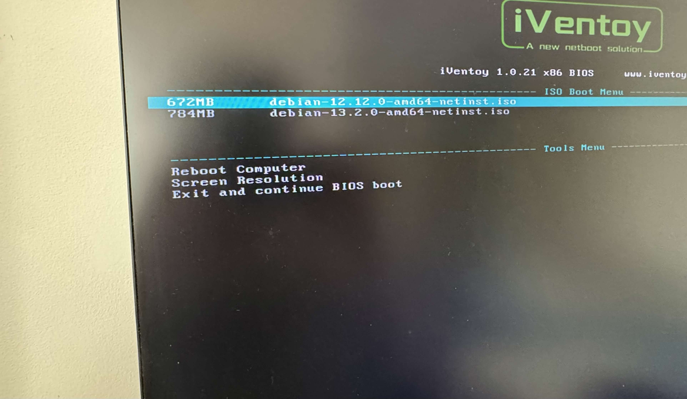
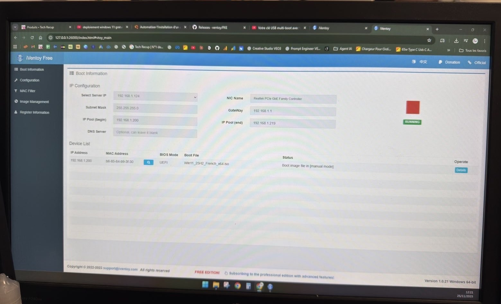

- Installation d’Iventoy sur un ordinateur portable dédié
- Configuration du service PXE
- Ajout d’images ISO Windows et Linux
- Modification de la carte réseau pour mettre une IP fixe
- Tests en machine virtuelle
- Tests sur postes physiques
- Validation du déploiement multi-machines
1. Contexte
Lors de mon 2ème stage chez Broker Informatique, l’entreprise a reçu un grand nombre d’ordinateurs à préparer en peu de temps. L’installation manuelle des systèmes d’exploitation prenait beaucoup de temps car nous avions pas assez de clés USB bootables pour tous les postes et le processus était répétitif.
Pour répondre à cette contrainte, nous avons décidé de mettre en place un serveur de déploiement PXE afin d’automatiser l’installation des systèmes et accélérer la préparation des postes. J’ai participé à la mise en place de cette solution technique.
2. Problématique
- Installer simultanément plusieurs postes facilement
- Doit être facilement déplaçable
- Pouvoir installer différent systèmes (Windows / Linux)
- Utiliser une solution gratuite
- Réduire l'utilisation de clé USB
- Simple à utiliser
3. Étude des solutions
FOG Project

Microsoft MDT
Iventoy
Après comparaison des solutions, j’ai choisi Iventoy car il est léger, portable, simple à configurer et ne nécessite pas d’infrastructure serveur complexe. Cette solution correspondait parfaitement au besoin ponctuel de l’entreprise.
4. Réalisation

5. Résultats
Le service permet désormais de déployer un système d’exploitation sur plusieurs postes simultanément en quelques minutes, sans avoir besoin de clés USB bootables.
La solution est portable, rapide à mettre en place et réduit l'utilisation de clés USB bootables.
6. Pistes d’amélioration
Automatiser la post-installation via scripts
Créer une documentation technique complète
Mettre en place un serveur permanent
7. Compétences mobilisées
✔ Mettre à disposition des utilisateurs un service informatique
✔ Répondre aux incidents et aux demandes d’assistance et d’évolution
8. Outils utilisés
Microsoft Excel • Scanner code-barres
9. Images du projet


